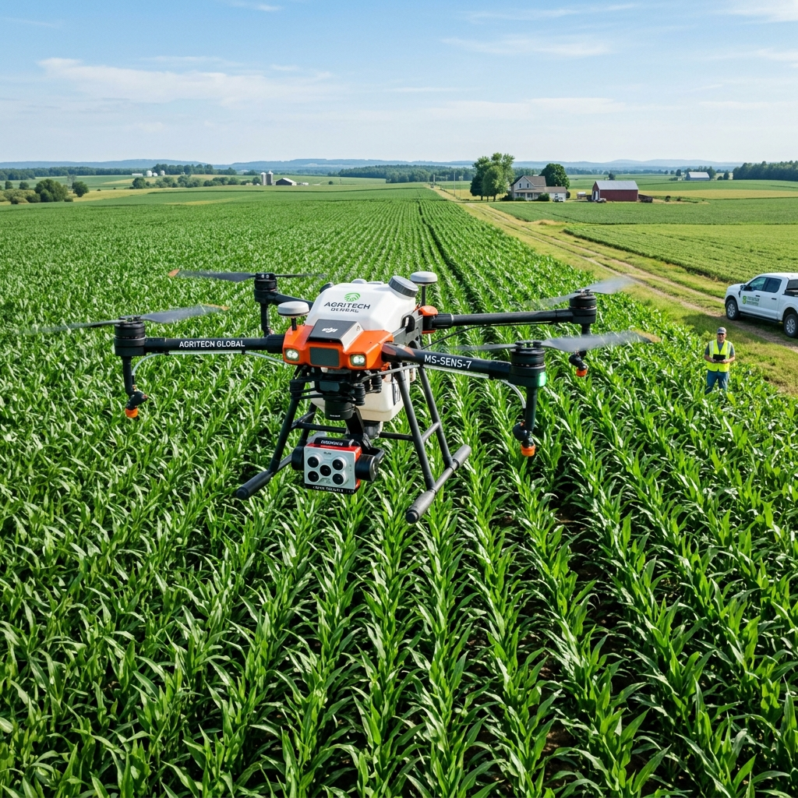
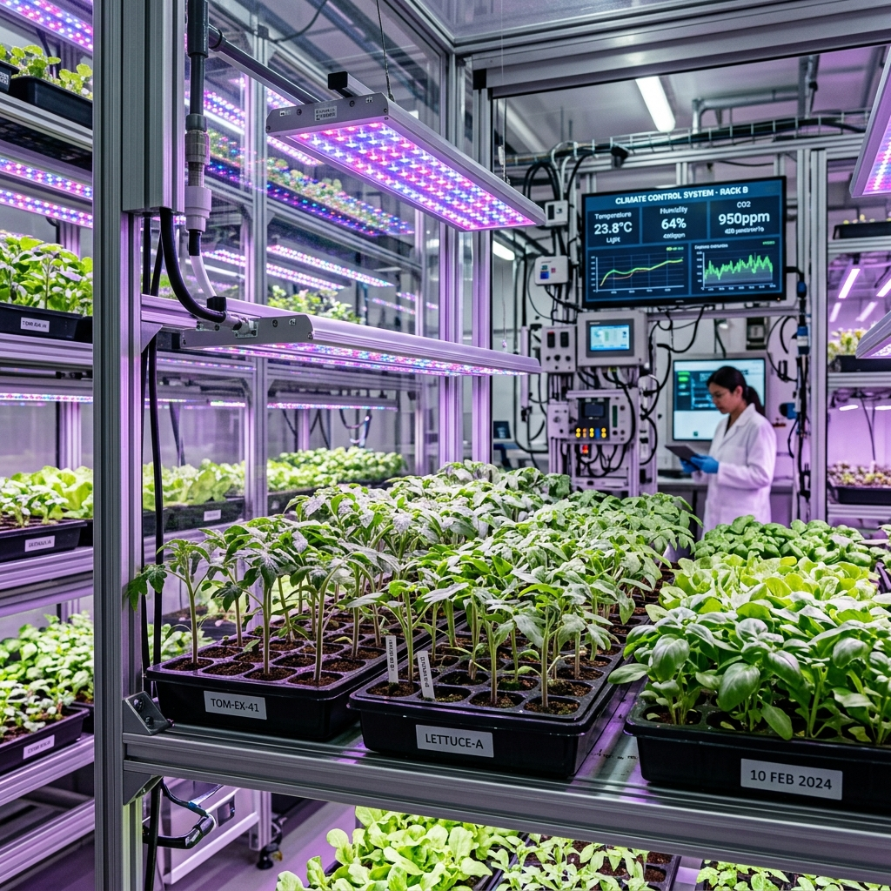

GIOVANNE BAHIA
"Cultivando soluções sustentáveis para o futuro da agricultura"
SOBRE MIM
Sou Giovanne Bahia, estudante de Agronomia no 7º período, apaixonado por agricultura sustentável e inovações no campo. Minha trajetória acadêmica e experiências práticas me permitiram desenvolver habilidades tanto no cultivo tradicional quanto nas mais recentes tecnologias agrícolas.
Acredito fielmente no equilíbrio entre a alta produtividade e a preservação ambiental, buscando sempre o desenvolvimento de soluções técnicas que tragam benefícios econômicos aos produtores e respeitem o ecossistema.
HABILIDADES
Agric. de Precisão
Manejo & Campo
Ciência & Pesquisa
EXPERIÊNCIAS
Atuação no mapeamento de áreas agrícolas utilizando drones, análise de solo e aplicação de insumos com taxa variável. Participação em projetos de irrigação inteligente e monitoramento de culturas.
Pesquisa sobre resistência de cultivares às mudanças climáticas. Coleta e análise de dados sobre crescimento vegetal em diferentes condições ambientais.
PROJETOS

Mapeamento com Drones
Projeto de mapeamento aéreo de áreas cultivadas para identificação de variações no desenvolvimento vegetal e aplicação de insumos em taxa variável.

Cultivares Resistentes
Pesquisa laboratorial sobre desenvolvimento e teste de cultivares adaptados a condições extremas de estresse hídrico e variações climáticas.